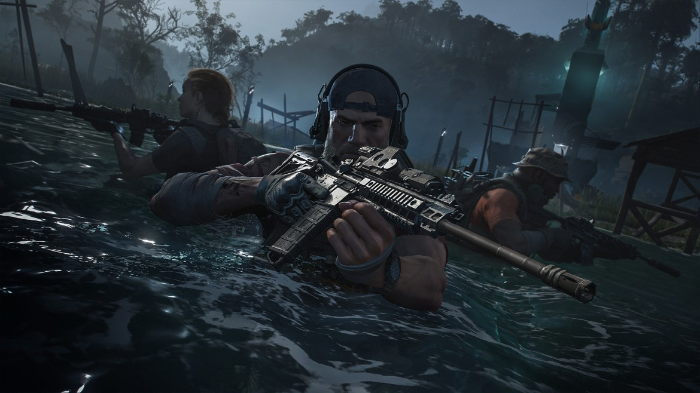

PENSAR, ACTUAR EN EQUIPO, NUNCA RETROCEDER
Tom Clancy's Ghost Recon (En latín Tom Clancy Reconocimiento Fantasma) es una serie de videojuegos de acción tácticos desarrollados por la empresa Red Storm Entertainment y Ubisoft, creados por el escritor norteamericano Tom Clancy. Ubisoft publicó el primer videojuego de la serie en el año 2001. Desde entonces, Ghost Recon se ha convertido en todo un éxito.
En este videojuego, los personajes jugables son miembros de un escuadrón de élite estadounidense conformado por las Fuerzas Especiales del Ejército de los Estados Unidos, la Delta Force y los SEAL.